First and foremost, I want to remind the blog readers and RSS subscribers that we have a site forum, where we discuss Aero, early 2000s, and all that kinda stuff. As I'm writing this, it has been online for 2 months and 12 days, and there have been 927 posts and 224 threads. We have 135 members, with around 20 regularly active.
If you have not joined already, or didn't look at it for a long time, we would appreciate you to join us! I think places of discussion outside of Discord, Reddit, and the other social media are important, so I hope you will help keep this forum growing so that more people can experience what a forum is.
Thank you all!
Apart from that, I'm really grateful for all the messages I've gotten on the guestbook, or by email, everyone has been very supportive of this project of mine, and I appreciate it very much. I wish I could add all the features and things that you request of me to, but as the only guy working on this, I only have a limited time in the day, and I don't want to burn myself out, as it's a passion project first and foremost.
Behind the scenes
If you're curious about the person running this whole thing, if
you even care, my name is Daniele, and my last name is
REDACTED
(Yep, do not leak your identity on the web, folks). I've been
coding since pretty much... 2017. And I've been stuck in tutorial
hell for years.
I've written this before in the about page of my website, but in a nutshell, I started a personal website in 2022, and in 2024 I wanted to make a Frutiger Aero shrine for it as I love the aesthetic, and I'm generally a fan of 2000s websites interfaces. But then I decided to make a new website instead, as an "archive" of FA content that I'd find, hence the name Frutiger Aero Archive (which is also inspired by the Internet Archive).
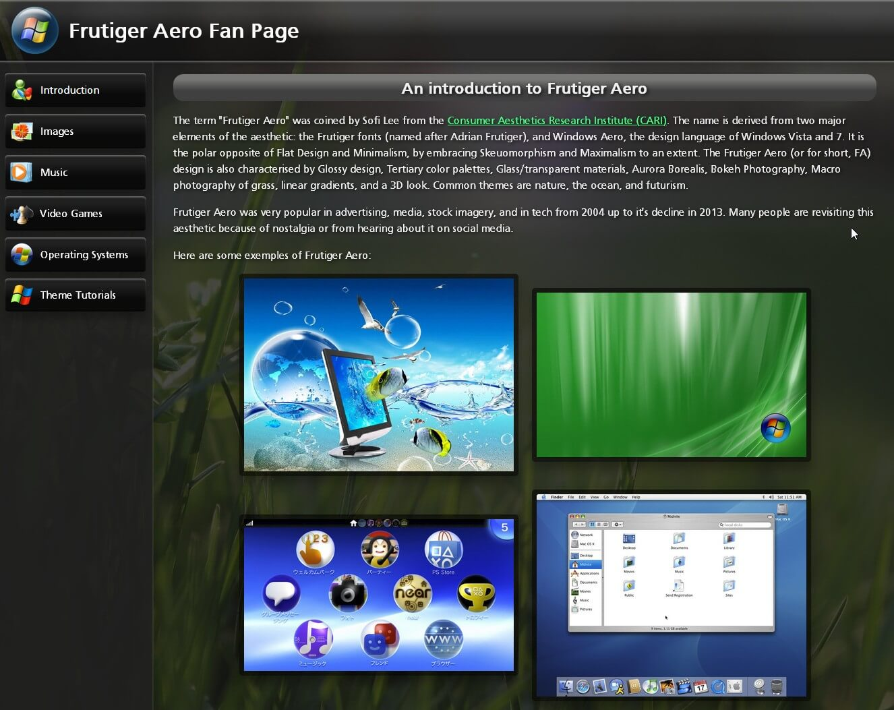
15/08/2024Attached above is the earliest screenshot I've got from the Archive, before I even uploaded it to Neocities, It's from 15/08/2024. I was still experimenting with what layout I wanted to go for. My first idea was to make it a full page layout, but I then decided to make it a centered page.
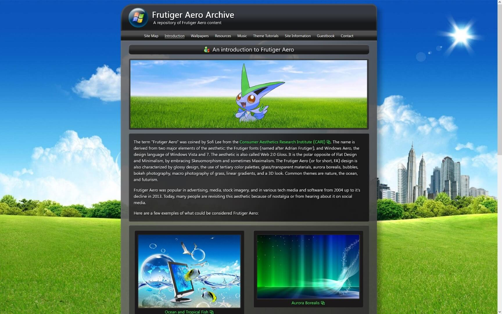
30/08/2024I felt it would be more unique and less boring this way. Here is a screenshot from 30/08/2024, the day I uploaded it to Neocities, where you can see the new centered layout. I had concern with mobile responsiveness from the start, so I thought a top navbar that collapses would be a good solution.
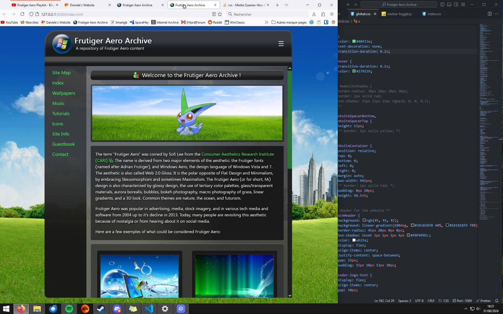
31/08/2024But I wasn't satisfied with the way it looked, so I opted for the same navbar layout as my personal website, with the navigation links on the left side, but this time I implemented a hamburger menu button for mobile screens, which uses JavaScript.
It's really better if you plan these things out from the start, as it can be a pain in the neck to implement later when your site already has a bunch of pages on it.
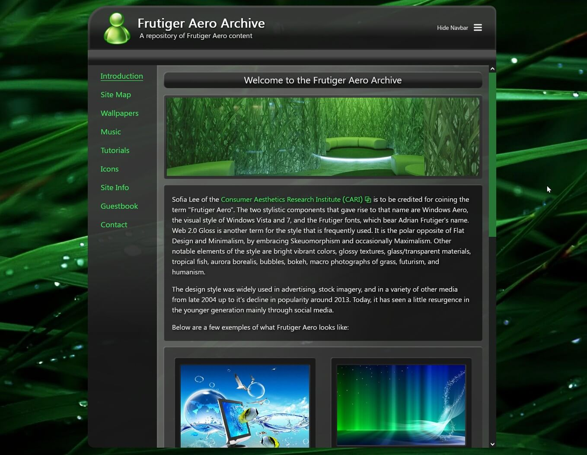
01/09/2024Here I changed the logo to a meeple and went for a more "green" theme. I quickly changed it, as I didn't think it looked very clean.
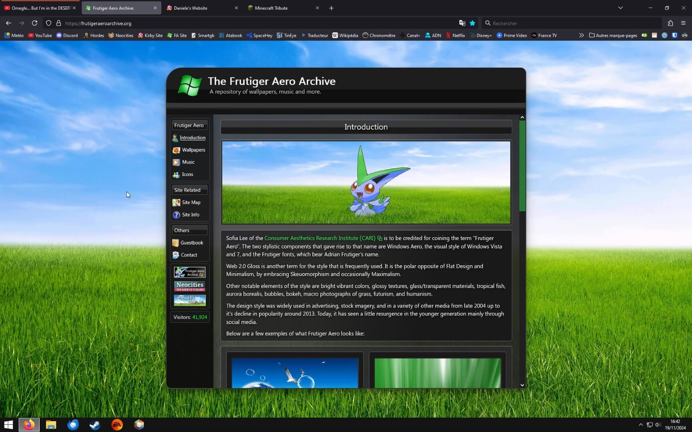
19/11/2024This is when the site started to look more like the current one, with the green logo, gradients, and general layout. The big difference is the lack of transparency and the fonts.
Green Logo, old and current version
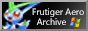
First 88x31 Button
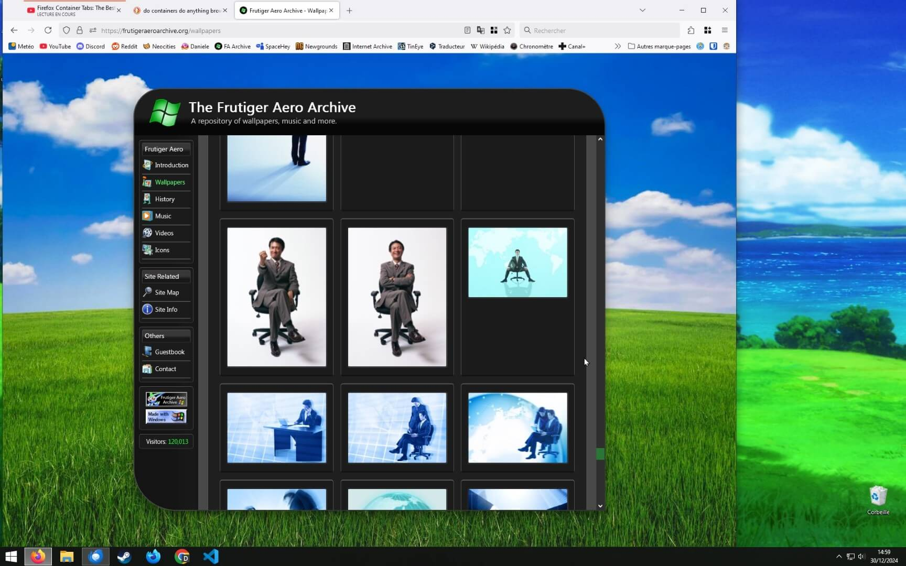
30/12/2024Here's how the wallpapers section used to look like. No download buttons, and images varied in size, which looked very bad. By the way, it still kinda looks like that if you use Internet Explorer, as I don't know how to make it look good without using display: grid; which is not supported on IE, so I had to use flex instead as a fallback. Apologies for the 0.01% of users who still use this dinosaur of a browser.
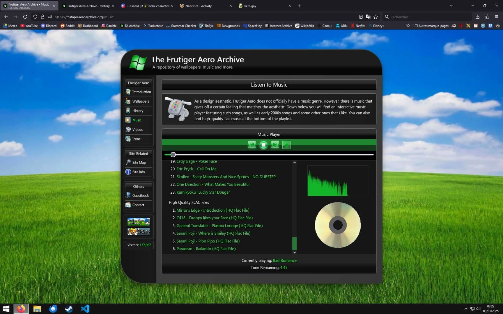
03/01/2025Take a look at how the music player used to look! Yes, the spinning disk used to be golden. If you were wondering how I make it spin, I just change the image from a PNG to a GIF using JavaScript whenever a song is playing or paused. EDIT: I now use CSS animations, which is a way better solution.
If you want to take a look at the older versions for yourself, they are archived on the Wayback Machine.
First Mascot: Vistini
The first mascot of this site was a Victini (from Pokémon) that I modified the tint of to become blue and green. He also features a Windows 7 logo on his chest, and his lower half is transparent and contains a few fish.
Here are a few PNG images of him that I've made and used for the site:
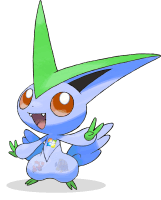
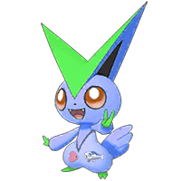
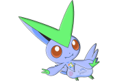
The image below I used as an album cover for my Frutiger Aero mixtape, which was called Frutiger Aero Bliss, which I kept when I implemented it to the site later on when I added the music player.
03/05/2024 (Background image is Bliss from Windows XP)
Second Mascot: Archive-Tan
Inspired by OS-Tans, especially Madobe Nanami, I wanted to have my own human character mascot for this website. But I currently suck at digital art, so until I get better at it, I chose to commission an artist which I love the 2000s moe art style. Here's a link to her website, if you want to support her.
She wears headphones, as music is an important part of the website, and she has green hair and green/black clothes, to match the look of the default theme of my website.
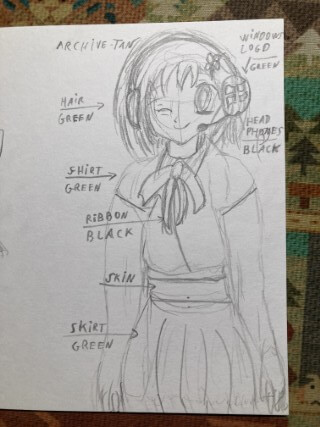
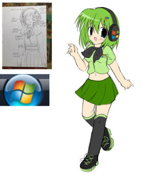
This is the first draft I was provided based on my drawing, which I then asked to make some modifications on.
This is the finished artwork, with a transparent background so I can add it to my header images.
Last updated: 20/06/2026 - Deleted section at the end